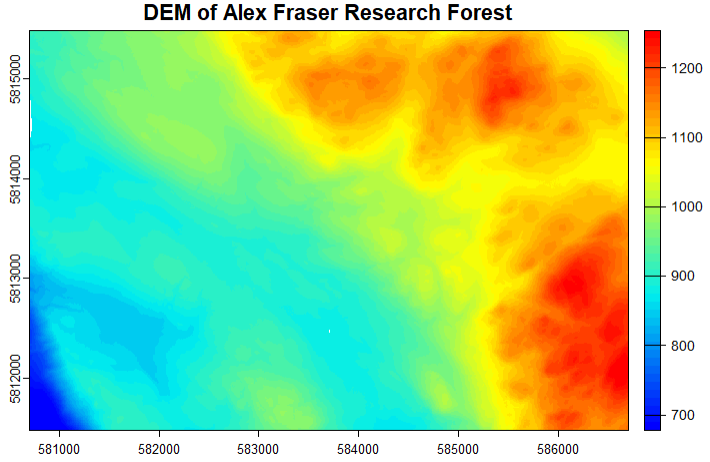
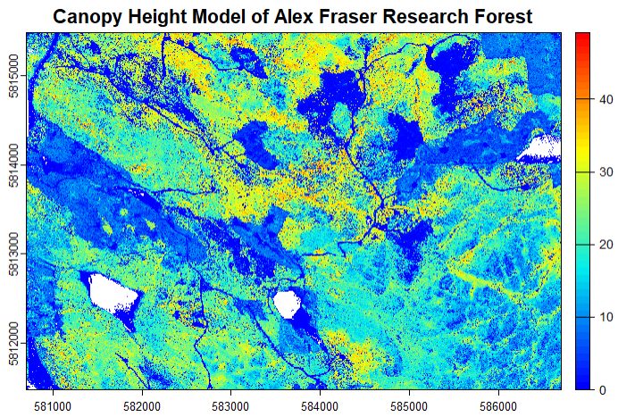
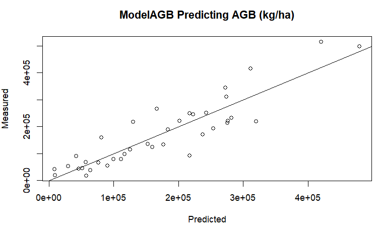
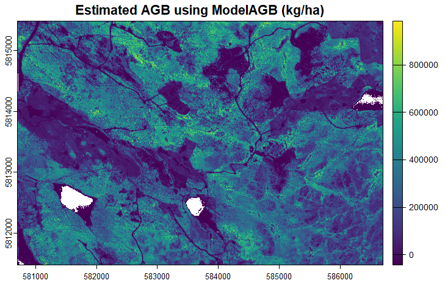

Show/Hide Code
library(lidR)
library(terra)
library(tidyverse)
library(rgl)
library(htmlwidgets)In this report, I focus on LiDAR data processing, forest attribute estimation, and model development using R. I begin by loading the necessary libraries, including lidR, terra, tidyverse, MASS, and corrplot, to facilitate LiDAR data processing, geospatial raster operations, statistical modeling, and visualization.
To prepare the data, I read LiDAR tiles (.las files) into a LAScatalog object, filter and normalize the point cloud using DEM-based normalization, and extract individual plots while ensuring the removal of duplicate points. I then generate Digital Elevation Models (DEM) and Canopy Height Models (CHM) to provide spatial context for further analysis.
Following this, I compute standard LiDAR cloud metrics such as mean height (zmean), maximum height (zmax), median height (zq50), and standard deviation (zsd). These metrics allow me to analyze forest structure across individual plots and the entire study area. I explore relationships between these LiDAR metrics and vegetation attributes, visualizing correlations and patterns.
To estimate forest attributes, I develop linear regression models for Above-Ground Biomass (AGB) and Dominant Height (DH) based on LiDAR metrics. Using stepwise variable selection, I optimize the model to improve predictive accuracy. I evaluate model performance by analyzing correlation matrices and comparing predicted values against measured data.
Once the best-fit models are identified, I apply them to LiDAR-derived rasters to generate spatial predictions of AGB and DH across the study area. By performing raster algebra, I compute differences between predicted and actual values, assessing the model’s effectiveness. Finally, I export the processed data and model outputs as .csv files for further analysis.
Throughout this process, I use various visualization techniques, including plotting LiDAR-derived metrics, DEMs, CHMs, and model results. I also generate correlation matrices to examine relationships between different variables and validate the accuracy of my models.
Overall, this report presents a complete LiDAR processing pipeline, from raw .las files to model-based forest attribute estimation. By integrating spatial data analysis, raster computation, and statistical modeling, I develop a data-driven approach to assessing forest structure and biomass distribution.
library(lidR)
library(terra)
library(tidyverse)
library(rgl)
library(htmlwidgets)# set working directory
setwd("C:/Users/lorsigno.stu/OneDrive - UBC/Desktop/Documents/GEM 521/Lab 4/L4_Data")
wd <- "C:/Users/lorsigno.stu/OneDrive - UBC/Desktop/Documents/GEM 521/Lab 4/L4_Data" # create a variable string working directory
# load in the RGB image and explore the structure
rgb_afrf <- rast("~/GEM 521/Lab 4/L4_Data/Aerial_Photo/AFRF_Aerial_Photo.tif") # read in the .tif aerial photo using the rast function
str(rgb_afrf) # display the structure of the SpatRaster
plotRGB(rgb_afrf) # plot the SpatRaster as an RGB image
#Create LAScatalog object from afrf las tiles
cat_afrf <- readLAScatalog("~/GEM 521/Lab 4/L4_Data/LAS")
#Set the output directory for the filtered .las data
opt_output_files(cat_afrf) <- paste(wd, "/Filtered/filtered_afrf_{ID}", sep = "")
#read filtered .las into LAScatalog
filtered_cat_afrf <- readLAScatalog("~/GEM 521/Lab 4/L4_Data/Filtered")
#Create DEM
dem_allLAS_afrf <- rasterize_terrain(filtered_cat_afrf, 2, tin())
#Create color palette
col_1 <- height.colors(50)
#Plot DEM using color palette
plot(dem_allLAS_afrf, col = col_1,
main = 'DEM of Alex Fraser Research Forest') #plot in 2D
#read normalized las into catalog to continue processing
norm_cat_afrf <- readLAScatalog("~/GEM 521/Lab 4/L4_Data/Normalized")
#add LAScatalog enginge option to filter undersired data points
opt_filter(norm_cat_afrf) <- '-drop_z_below 0 -drop_z_above 55'
#Create CHM for all normalized afrf Tiles
chm_afrf <- rasterize_canopy(norm_cat_afrf, 2, p2r())
plot(chm_afrf, col = col_1,
main = 'Canopy Height Model of Alex Fraser Research Forest') #plot in 2D
We extract the field plots and calculate some cloud metrics
Then combine the plots and cloud metrics into one data table.
# read in the .csv table with field data
afrf_plot_table <- read.csv("~/GEM 521/Lab 4/L4_Data/Plots/Plot_Table.csv")
# define the size if the plot radius
radius <- 10
#for loop to extract multiple plots
for(i in 1:nrow(afrf_plot_table)){ #run the loop until i = the number of rows in 'plot_table' (20)
plot_cent <- c(afrf_plot_table$X[i], afrf_plot_table$Y[i]) #extract plot center
plot_las <- clip_circle(norm_cat_afrf, plot_cent[1], plot_cent[2], radius) #clip plot from norm_cat_las
output_file <- paste("~/GEM 521/Lab 4/L4_Data/Plots/afrf_Plot_", i, ".las", sep = "") #output directory as string
writeLAS(assign(paste("afrf_Plot_", i, sep = ""), plot_las), output_file) #write'afrf_Plot_i' to output dir.
}
#check a plot
plot1 <- readLAS("~/GEM 521/Lab 4/L4_Data/Plots/afrf_Plot_1.las")
plot(plot1)
#Calculate cloud metrics for all plots
#create empty dataframe
afrf_plot_metrics_2 <- data.frame()
#For loop to calculate cloud metrics for all plots and add them to 'afrf_cloud_metrics'
for(i in 1:nrow(afrf_plot_table)){ #for loop == number of rows in plot_table (20)
plot <- readLAS(paste("~/GEM 521/Lab 4/L4_Data/Plots/afrf_Plot_", i, ".las", sep= ""), filter = '-drop_z_below 0 -drop_z_above 55')
metrics <- cloud_metrics(plot, .stdmetrics) #compute standard metrics
afrf_plot_metrics_2 <- rbind(afrf_plot_metrics_2, metrics) #add the new 'metrics' to 'afrf_cloud_metrics'
}
#Add column to "afrf_plot_metrics' called Plot_ID (join key)
afrf_plot_metrics_2$Plot_ID = 1:38 # create a column with values 1-20 to join the plot_table to based on the ID.
#Join 'Plot_Table' and 'afrf_Plot_Metrics' into 'data_table'
data_table <- afrf_plot_table %>%
full_join(afrf_plot_metrics_2) # join the plot_table to afrf_plot in a seperate frame called data_table.#check a plot
plot1 <- readLAS("~/GEM 521/Lab 4/L4_Data/Plots/afrf_Plot_1.las")
plot(plot1)
# Open a 3D rendering window for Li et al.2012
open3d()
plot(plot1)
rglwidget_obj_plot1 <- rglwidget()
saveWidget(rglwidget_obj_plot1, file = "interactive_plot1.html", selfcontained = TRUE)modelAGB <- lm(Total_AGB ~ zmean + zsd + zmax, data = data_table)
# plot predicted model vs measured volume
plot(Total_AGB ~ modelAGB$fitted,
data = data_table,
xlab = 'Predicted',
ylab = 'Measured',
main = 'ModelAGB Predicting AGB (kg/ha)')
abline(0, 1) # fit a one to one line of best fit
# define the metrics we want
f <- function(z) {
list(
zmean = mean(z),
zsd = sd(z),
zmax = max(z))
}
#Calculate pixel metrics for entire study area
pixel_metrics_afrf <- pixel_metrics(norm_cat_afrf, func = ~f(Z), 10)
# subset zq95
zmean_afrf <- terra::subset(pixel_metrics_afrf, "zmean")
# subset zsd
zsd_afrf <- terra::subset(pixel_metrics_afrf, "zsd")
# subset zmax
zmax_afrd <- terra::subset(pixel_metrics_afrf, "zmax")
# stack raster
raster_stack_AGB <- c(zmean_afrf, zsd_afrf, zmax_afrd)
# create function from model
AGB_func <- function(x){
30539.090*x[1] - 25978.149*x[2] + 5336.517*x[3] - 44006.100
}
# apply function to raster
model_AGB_predictor <- terra::app(raster_stack_AGB, AGB_func)
plot(model_AGB_predictor,
main = 'Estimated AGB using ModelAGB (kg/ha)')